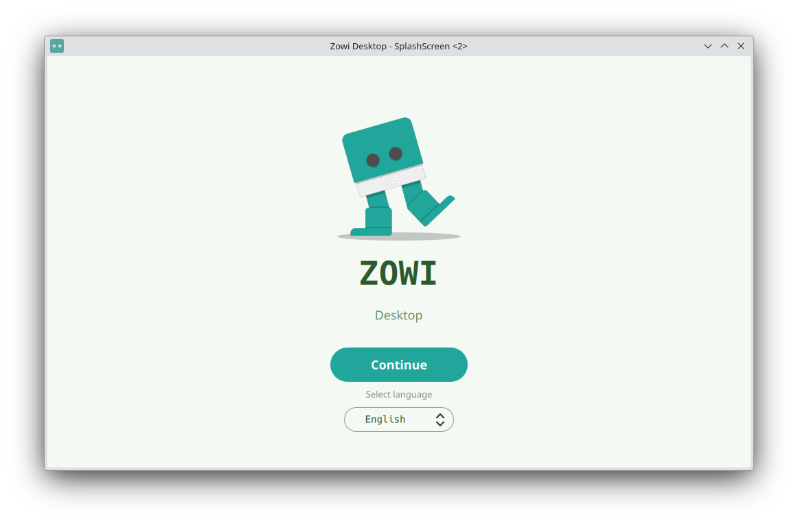
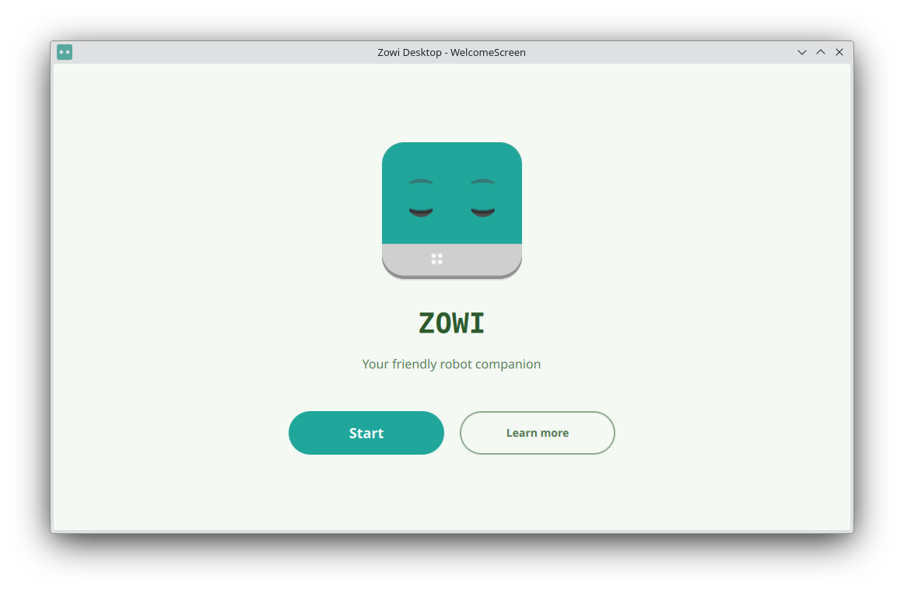
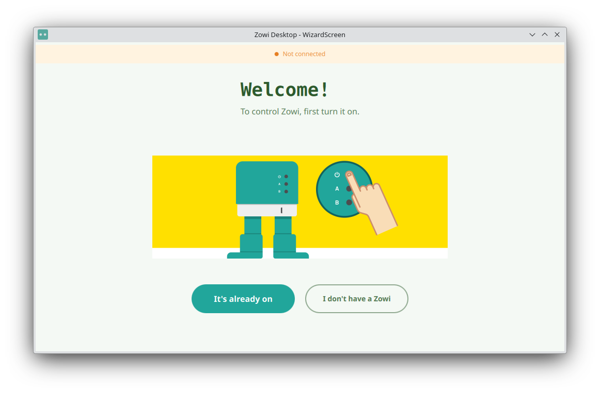
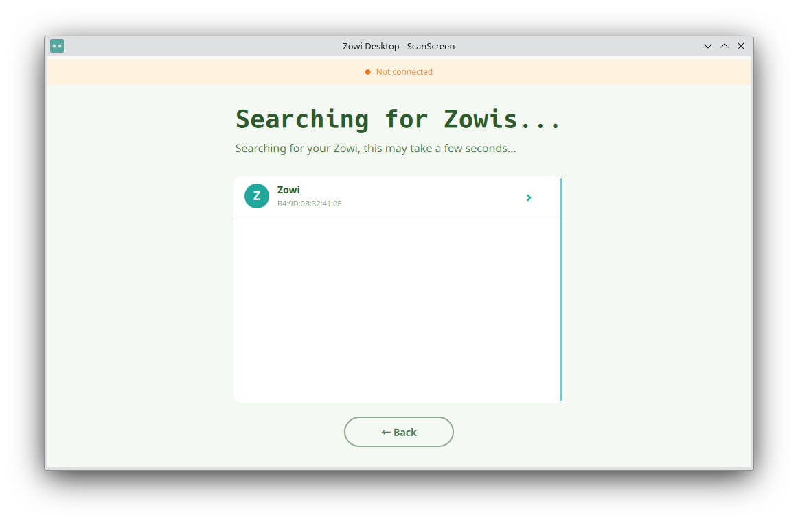
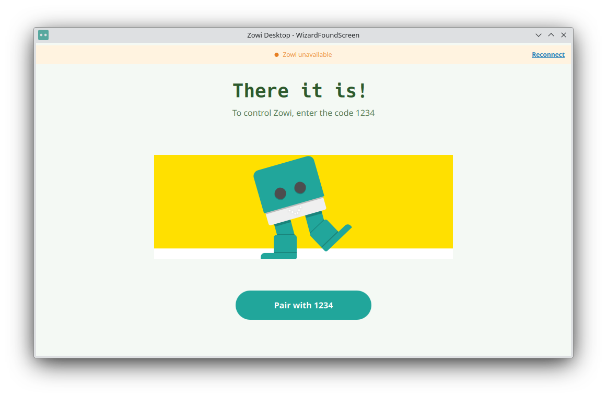
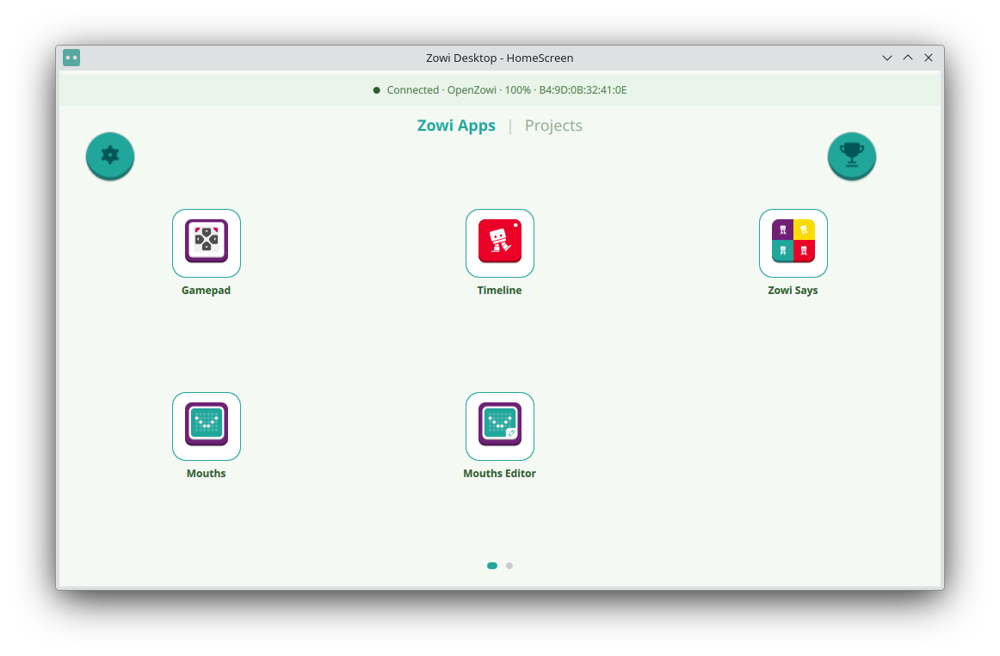
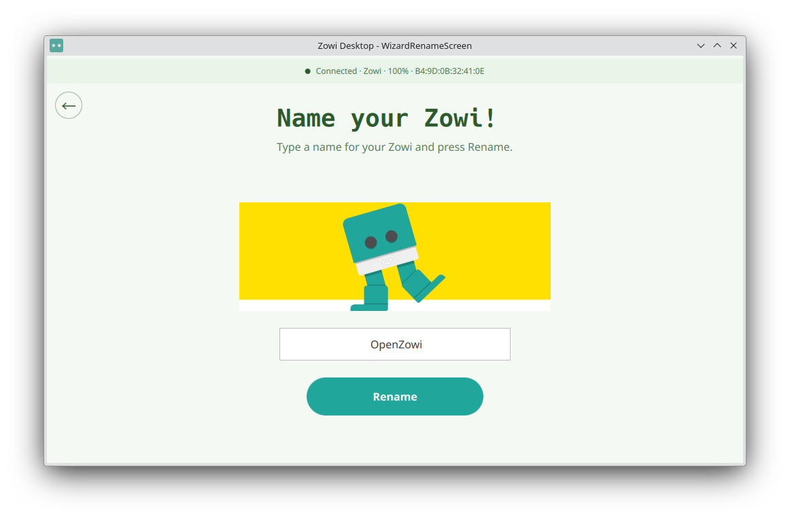

Nombrando tu Zowi
Zowi Desktop es una aplicación multiplataforma para controlar y programar tu robot Zowi desde el ordenador mediante Bluetooth. Esta guía te muestra cada pantalla de la aplicación.
Al abrir la aplicación ves la pantalla de inicio. Elige tu idioma en la lista — Español, Valencià, English, Français, Български — y pulsa Continuar. También puedes Salir de la aplicación desde aquí.

La pantalla de bienvenida presenta a Zowi. Pulsa Comenzar para iniciar la configuración, o Más información para leer sobre el robot.

El asistente de configuración comprueba que tu Zowi está listo. Asegúrate de que está encendido y cerca. Si ya está encendido, elige “Ya está encendido”. Si aún no tienes un Zowi, también puedes explorar la aplicación sin uno.

La aplicación busca dispositivos Zowi cercanos. Cuando tu Zowi aparezca en la lista, púlsalo. Se te pedirá que introduzcas el código de emparejamiento 1234 para emparejarlo con el robot.


Escribe un nombre para tu Zowi y pulsa Renombrar. El nombre se envía al robot y se recuerda la próxima vez.
Una vez conectado llegas a la pantalla principal, que tiene dos páginas:
Usa los botones superiores para abrir Ajustes y Logros. La barra de estado superior muestra el estado de conexión:
Conectado · <nombre> · <batería>% · <MAC> — tu Zowi está listo.Conectando… — la aplicación está intentando localizar a tu Zowi.Zowi no disponible — tu Zowi guardado está apagado o fuera de alcance; pulsa Reconectar.No conectado — no se ha configurado ningún Zowi.

Cada vez que abres la aplicación, Zowi Desktop intenta reconectar con el último Zowi usado si está encendido. Si está apagado, la barra de estado te lo indicará y podrás pulsar Reconectar en cualquier momento.
El botón Restablecer, visible en modo desarrollador, elimina el Zowi registrado de la aplicación y del sistema Bluetooth. Si no hay ningún Zowi registrado, se muestra un mensaje de advertencia.